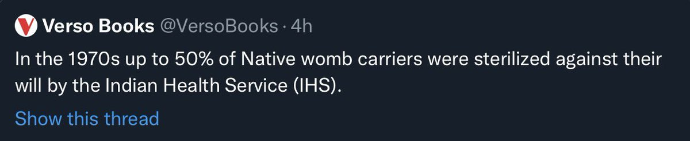

95. Construct Essentialism 🔗
June 23, 2022
In which I critique construct essentialism — the linguistic power grab of replacing natural-kind terms with deconstructed feature descriptions — through analogies to fine dining menus, the milk wars, and the lump-of-humanism fallacy, arguing that defaults are inevitable efficiencies, not oppression.
🔗
This language reminds me of how high-end fine-dining restaurants don’t name dishes but describe the recipe in brief, ie construct language
“Braised romanesco with fennel and bits of organic Soylent Green womb”
Except there novel dishes are actually constructed/deconstructed
“Braised romanesco with fennel and bits of organic Soylent Green womb”
Except there novel dishes are actually constructed/deconstructed
🔗
The problem with construct essentialism is that we literally don’t have anywhere close to cooking levels of construction technology, at say genetic levels of control of hair color or something. “Social construct” really means “labeling a naturally occurring variety”
🔗
Since interventions to address gender dysphoria are at primitive levels (cooking equivalent would perhaps be skinning animals, and HRT is perhaps like the discovery of fire cooking), true “construction” accounts for a tiny fraction of variety. The rest is refined labeling.
🔗
And the battle over the high-value brand “woman” suggests something analogous to the lump of labor fallacy. Call it lump of humanism fallacy.
‘There is a fixed amount of “recognition as human” available. To humanize one group we must dehumanize another’
‘There is a fixed amount of “recognition as human” available. To humanize one group we must dehumanize another’
🔗
The Verso tweet is a master class in negative-sum humanism games. It manages to dehumanize women and native Americans without achieving any meaningful gains for trans dignity.
The only gainers are those seeking bureaucratic power in organizations through control of language
The only gainers are those seeking bureaucratic power in organizations through control of language
🔗
I won’t pretend I have easy answers. For eg, if a pattern of gender dysphoria only finds relief by presenting as, and being recognized as conventionally defined women in public, there is a hard zero-sum tradeoff between erasing one linguistic boundary and establishing another
🔗
Food offers examples too. For example, as a vegetarian leaning vegan, I kinda see the arguments on both sides of the fight over the word “milk” (appropriately enough, the “woman” of food)… and to a lesser extent eggs and meat. These are less fraught so easier to think about.
🔗
Like, we literally would not want differences between dairy, soy, oat, almond etc milks erased since people on all sides actually care what we put in our coffee or cereal. In some cases allergies etc are involved. Maybe not as much as about sexual preferences.
🔗
As expected original quoted tweet has been deleted, but this one deserves to live on in the twitter hall of screenshotted infamy, so here you go. You don’t get to delete tweets when you’re trying to erase identities.

🔗
In the bureaucratic language-power games, the linguistic “innovation” is consequential for forms and in databases. Which is actually kinda endgame-logical. In the distant future when men and robots can have wombs, “womb” should be a field rather than default entailment of “woman”
🔗
But in most contemporary social contexts, eg tweeting about history (as opposed to performing surgery for uterine cancer or deciphering what ‘would you like to come up for coffee’ means in undeclared-plumbing terms on a date), using dehumanizing construct language is idiotic
🔗
Assumed efficient defaults cannot automatically be treated as oppression by either majority or minority. Just because some burgers are veggie doesn’t mean using unqualified ‘burger’ to refer to a meat patties is oppression of vegetarians. I’m fine specifying.
🔗
The original pronoun wars are a good illustration. I’m happy to use non-assumed-default pronouns for you, or ask if in doubt. I’m not going to declare mine on my profile, but don’t have an opinion on if others should. If you make a mistake in addressing me, I won’t take offense.
🔗
Intent to treat others humanely is a matter of adult judgment not compliance with rules. We’re all minorities in some ways, and enjoy some majority/default privileges in other ways. Some enjoy more defaultness and some are perhaps burdened with more non-defaultness than most…
🔗
But defaults are neither good nor bad. They are inevitable emergent efficiencies of convention and behavior that leverage the statistical patterns around us.
🔗
And remember that plenty of non-defaultness (eg illness) is invisible. Whether visibility helps or hurts in a particular non-default lived experience is a case-by-case thing. I’m glad my appearance signals my ethnicity, but not my financial situation.
🔗
If you spend 10 minutes learning about these culture wars, you realize it’s almost entirely about grabbing institutional power while pretending to empower much larger groups the power-grabbers don’t actually have the consent to represent.
🔗
But you can’t run around withdrawing consent from every representation battle you’re represented in. Eg. most vegetarians/vegans don’t speak for me. Most Indians don’t speak for me. But I’m not going to go around playing misrepresentation-whack-a-mole. That’s intractable.
🔗
But I can reject attempts to police how I represent myself. And I can reject people who claim to speak for larger groups when I see no proof of broad consent. I can speak for myself, and directly to inferred groups I’m not in. In both cases there’s risk in rejecting power claims.
🔗
I’ve stayed out of posting a take on this particular battle within the culture war but have been tracking it for years. In a few DM convos, it is the main topic of conversation. I have a few trans friends and it’s clear to me that the language power-trip types don’t speak for all
🔗
It’s also clear that this is the strategic battle on which the culture war will turn. And the power-tripping construct essentialists trying to gain control over specific school boards and HR departments are either oblivious to the cost to the larger war, or indifferent to it.
🔗
The price of a few petty power-seekers doing this is externalities that just hand the initiative to the worst of illiberal reactionaries, and driving casual observers straight into their arms. Exhibit A is the weaponization of “CRT” by Rufo. A fine own-goal assist by the left
@nils_gilman You know what might work? Turn his name into a verb for this kind of bad faith discourse. "This is not CRT, it is Rufology" or "This conversation has obviously been chrisrufoid" and if somebody asks, you have an opening to explain